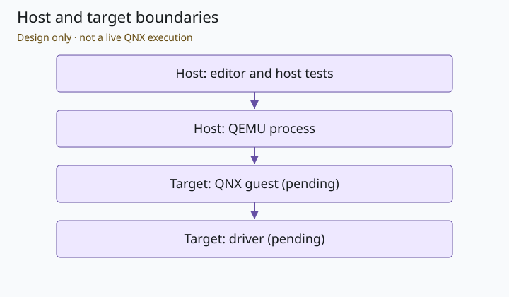

Write your first QNX 8.0 PCI driver in QEMU — private E2 draft
1. Setup and evidence
Planning estimate: 8 minutes
PRIVATE DRAFT: durations are unmeasured planning estimates, not a learner completion claim. E1 commit 387ba38 has fresh native all-six-step functional PASS with valid resource caps. QSTI provenance remains unverified; this is a custom QNX 8 IFS, not a verified QSTI release. All twelve E2 snapshots have source-bound qcc compilation evidence, not per-snapshot learner runtime acceptance. Production safety, complete policy/restart/error injection and two fresh learners remain pending. Do not publish.
Canonical learner route — work here first
Start here: step3 first, then your own /dev/edu. Private conditional acceptance;
native feature freeze. No reference PASS transfers to your edits. Existing automated
native observations are not fresh SDK installation, second-SDK portability or
independent human acceptance. C6 STOPPED; SocketCAN UNVERIFIED. No publication.
Use Bash and Python3 from any working directory. Replace these absolute placeholders
with your chosen paths. Keep SDKs, ELFs, IFS and disks outside every checkout,
including ignored folders. Snippet paths must have no spaces.
export EDU_REPO=/absolute/path/to/qnx-edu-kit
export EDU_WORK=/absolute/external/edu-learner
export EDU_SDP_ENV=/absolute/licensed/qnx800/qnxsdp-env.sh
export EDU_PLATFORM=/absolute/external/new-clean-platform
export EDU_ACTIVE=/absolute/external/learner-active
export EDU_QEMU=/absolute/path/to/qemu-system-x86_64
export EDU_NATIVE_LOCK=/absolute/external/native-test.lock
export PATH="$(dirname "$EDU_QEMU"):$PATH"
python3 "$EDU_REPO/scripts/learner_lab.py" --help
python3 "$EDU_REPO/scripts/learner_clean_preflight.py" --sdp-env "$EDU_SDP_ENV" --fresh-work "$EDU_PLATFORM"
Run the preflight inside your already licensed Linux x86_64 SDK host, not
merely the ARM QEMU host. It checks compiler/image tools and stock startup/kernel/
PCI files, not activation, complete BSP compatibility or bootability. Exit2 is
BLOCKED: stop and retain JSON. Do not install/activate an SDK or substitute an
owner image. Trust the supplied environment script before sourcing it.
On a split host, copy the original standalone learner_lab.py and
learner_clean_preflight.py plus your source to the SDK host; replace EDU_REPO script
paths there with those copied absolute script paths. Neither imports a companion
module currently. On the QEMU host check the chosen executable and host utilities:
"$EDU_QEMU" --version
command -v flock
command -v systemd-run
systemctl --user show-environment >/dev/null
Presence is not proof of effective resource caps. Serialize all SDK/native QEMU
phases under the same exclusive lock: host100%CPU/1GiB/nice15,
guest1vCPU/512MiB. Stop/reap SDK QEMU before native QEMU. Do not use old uncapped
guestctl. Set EDU_NATIVE_LEASE=granted only while actually owning the lock.
1. Predict and edit step3
Write a prediction externally: complement32(12345679)=edcba986, but the fixed
stage expects write12345678/readedcba987. The wrong variant must fail even if your
application incorrectly returns0. Then initialize your own source:
python3 "$EDU_REPO/scripts/learner_lab.py" init --stage step3 --work "$EDU_WORK/step3"
Edit EDU_WORK/step3/main.c, not a solution/generated snapshot. Complete the BAR
TODO: request per-thread I/O level1 only, obtain BAR metadata, require memory
BAR0 of at least0x1000 bytes, map uncached, read ID r[0], write r[1] and read
r[1] back through volatile MMIO. Start with wrong write0x12345679. Emit actual
values, not constants:
printf("LEARNER_MMIO id=%08x write=%08x read=%08x\n", id, written, observed);
Check ID010000ed/complement, return nonzero on mismatch, preserve unmap/detach.
A program's own PASS is not the stage oracle.
The original `scripts/learner_bootstrap.sh` below supports stock-platform setup; it is not an SDK installer. Narrow tested configuration:
SDP8, Generic x86_64 BSP0.0.1.00050T202311201204L,
mkqnximage0.5.0.00132T202605281115L, QEMU8.2.2 pc TCG. Missing compatible legal
SDP/BSP or matching disk means BLOCKED, not second-install portability PASS.
Existing SDK reuse is not a fresh SDK install.
On the SDK host under the shared SDK lease, source the trusted SDP and preseed
only to resolve the later application snippet files. The preseed image is NOT
learner completion. Keep launchers outside the empty platform directory.
source "$EDU_SDP_ENV"
mkdir -p "$EDU_ACTIVE"
qcc -Vgcc_ntox86_64 -std=gnu11 -O0 -g3 -Wall -Wextra -Wno-unused-variable -o "$EDU_ACTIVE/learner_bin" "$EDU_WORK/step3/main.c" -lpci
printf '#!/bin/sh\nexit 2\n' > "$EDU_ACTIVE/learner-start.sh"
mkdir "$EDU_PLATFORM"
cd "$EDU_PLATFORM"
mkqnximage --type=qemu --arch=x86_64 --build --ssh-ident=none
mkdir -p local/snippets
sed "s|@OUT@|$EDU_ACTIVE|g" "$EDU_REPO/scripts/learner-step3.build.in" > local/snippets/ifs_files.learner
printf 'waitfor /dev/pci/server_id_1 30\nsh /proc/boot/learner-start.sh\n' > local/snippets/post_start.learner
mkqnximage --build
Keep the stock kernel unmodified. On the constrained SDK guest, arrange authorized
1GiB disk-backed guest swap and an isolated transient guest build service before
linking:512MiB without swap previously OOMed. Do not lift caps or strip the kernel.
Stop on OOM, transport loss or nonterminal service status. The following explicit preparation is required; historical launchers are not shortcuts.
##### Split-host mapping and isolated service (before the commands above)
Choose EDU_SHARED_HOST (external directory on the QEMU host) and EDU_SHARED_GUEST
(the same directory as mounted inside Linux). Prove the mapping by writing a nonce
on the host and reading identical bytes inside the guest before copying scripts.
For the existing private VM only, the parent share is mounted at /mnt/host; this
is an environment mapping, not a portable assumption. EDU_WORK may be that shared
mapping; EDU_PLATFORM and EDU_ACTIVE should be guest disk directories, not 9p.
Copy learner_lab.py, learner_clean_preflight.py, learner_bootstrap.sh and
learner-step3.build.in from this exact revision into the chosen share. Copy only
original scripts and your edited C. At the guest set EDU_SOURCE to the wrong
main.c, EDU_SNIPPET to that copied fragment, EDU_SDP_ENV, EDU_PLATFORM and
EDU_ACTIVE to their guest paths; host paths are not interchangeable.
Choose EDU_SWAP on the Linux guest disk and EDU_BUILD_USER as the existing licensed
user. As guest root, reactivate the existing authorized 1GiB file (no overwrite,
no fstab edit); check disk, owner, size and active state first:
define these variables in Bash before running:
export EDU_SWAP=/absolute/guest-disk/existing.swap
export EDU_BUILD_USER=existing-licensed-user
export EDU_UNIT=learner-bootstrap-unique
export EDU_JOB=/absolute/guest-visible-share/job.sh
export EDU_LOG=/absolute/guest-visible-share/build.log
df -h "$(dirname "$EDU_SWAP")"
stat "$EDU_SWAP"
test "$(stat -c %s "$EDU_SWAP")" = 1073741824
swapon --show
if ! swapon --show=NAME --noheadings | grep -Fx "$EDU_SWAP"; then swapon "$EDU_SWAP"; fi
free -m
systemctl is-active host-queue.service
systemctl show host-queue.service -p NRestarts
systemd-run --unit="$EDU_UNIT" --property="User=$EDU_BUILD_USER" --property=OOMPolicy=stop --property=RuntimeMaxSec=1830 --property="StandardOutput=file:$EDU_LOG" --property=StandardError=inherit /usr/bin/timeout --kill-after=15 1800 /bin/bash "$EDU_JOB"
# Wait for terminal inactive/failed state; active + status0 is NOT success.
systemctl show "$EDU_UNIT" -p ActiveState -p Result -p ExecMainCode -p ExecMainStatus -p MainPID
systemctl show host-queue.service -p ActiveState -p NRestarts
EDU_JOB is a user-owned Bash file OUTSIDE EDU_PLATFORM. It exports the chosen
variables, runs the standalone preflight (retain JSON), then calls
`bash "$EDU_SHARED_GUEST/learner_bootstrap.sh"` instead of manually repeating the
stock/preseed/snippet block above. It must use set -eo pipefail and stop at the
first failure. The guest service must terminate Result=success, ExecMainStatus=0,
MainPID=0; retain its log externally and hash it, do not commit proprietary
compiler/platform output. If swap is absent, stop for authorized disk-swap setup;
no automatic creation, installation or cap increase is provided. Reuse the same
isolated-service pattern for each learner build. Set HOME for the licensed user.
The Linux controller is existing environment infrastructure, not supplied by this
repository; its supported console/transport must run these commands as root and
collect terminal service status. Stop/reap its VM before each native run.
Now replace the preseed with a freshly compiled source-bound bundle:
python3 "$EDU_REPO/scripts/learner_lab.py" build --stage step3 --source "$EDU_WORK/step3/main.c" --out "$EDU_ACTIVE" --sdp-env "$EDU_SDP_ENV" --buildfile "$EDU_PLATFORM/output/build/ifs.build" --bsp-cwd "$EDU_PLATFORM"
Preserve the entire bundle externally before replacing it with another variant.
For split hosts, transfer that bundle and matching output/disk-qemu externally,
and set EDU_ACTIVE/EDU_PLATFORM to the QEMU-host copies. The current edited source
must also match. Never substitute a historical binary or edit manifest hashes.
3. Observe, diagnose, fix and explain step3
Stop/reap the SDK guest; hold the exclusive native lease on the QEMU host:
flock "$EDU_NATIVE_LOCK" env EDU_NATIVE_LOCK="$EDU_NATIVE_LOCK" EDU_NATIVE_LEASE=granted python3 "$EDU_REPO/scripts/learner_lab.py" run --stage step3 --source "$EDU_WORK/step3/main.c" --bundle "$EDU_ACTIVE" --disk "$EDU_PLATFORM/output/disk-qemu" --receipt "$EDU_WORK/step3/wrong"
Expect host1 for the wrong edit; host2 is a setup/binding BLOCKED, not the intended
learning failure. Read wrong.json and wrong.log: actual ID/write/read, target exit
and device_readback check. Explain why edcba986 establishes the wrong write and
why application exit0 cannot pass the fixed oracle. Fix write to12345678, rebuild
with the same build command, then repeat run with receipt EDU_WORK/step3/correct.
Require host0, readedcba987, QNX8 identification, matching source/binary/image/disk
bindings, bounded completion and stopped/reaped QEMU. Stale hash means rebuild,
not replay a saved log. Explain the changed observation and cleanup externally.
4. Predict and edit your own /dev/edu
Predict: normal write10 plus cat returns3628800, with one IRQ completion and ack0.
A node existing alone, reference PASS or printed constant does not suffice.
python3 "$EDU_REPO/scripts/learner_lab.py" init --stage step6 --work "$EDU_WORK/finish"
Edit EDU_WORK/finish/main.c: complete dispatch setup, bounded handlers, per-open
snapshots and /dev/edu attachment. Correct the starter IAT lifetime: attach normally
inside the write's factorial transaction (initial unmask before trigger), wait
using _NTO_INTR_WAIT_FLAGS_UNMASK, acknowledge and detach before stdio/dispatch
and on errors. Remove explicit InterruptUnmask after that wait; do not unmask
twice. Do not attach at daemon startup or block an IST in dispatch. Earlier failed
implementations remain preserved. This starter supplies IRQ/factorial scaffolding;
it does not assess all earlier stages from scratch or authorize new native features.
5. Observe, diagnose and explain your /dev/edu
Build inside the same legal SDK platform, then stop/reap SDK QEMU before the
exclusive native run on the QEMU host (transfer fresh external bundle if split):
python3 "$EDU_REPO/scripts/learner_lab.py" build --stage step6 --source "$EDU_WORK/finish/main.c" --out "$EDU_ACTIVE" --sdp-env "$EDU_SDP_ENV" --buildfile "$EDU_PLATFORM/output/build/ifs.build" --bsp-cwd "$EDU_PLATFORM"
flock "$EDU_NATIVE_LOCK" env EDU_NATIVE_LOCK="$EDU_NATIVE_LOCK" EDU_NATIVE_LEASE=granted python3 "$EDU_REPO/scripts/learner_lab.py" run --stage step6 --source "$EDU_WORK/finish/main.c" --bundle "$EDU_ACTIVE" --disk "$EDU_PLATFORM/output/disk-qemu" --receipt "$EDU_WORK/finish/result"
Read result.json/result.log. The wrapper starts YOUR daemon, waits for /dev/edu,
writes10 by shell redirection and cats the actual text. Require host0,
write_rc0/read_rc0/result3628800, IRQ completion1/input10/result3628800/ack00000000,
QNX identification, matching build bindings, bounded completion and reaping.
On timeout retain source/build/failure logs, inspect IAT attach/unmask/detach,
change source and rebuild. No reference priming or polling fallback.
Explain device ack versus kernel unmask versus dispatch ownership, and why daemon
termination143 is not graceful lifecycle proof. Record hashes/exact commands.
No full-platform/SSH health, lifecycle, safety, timing, least privilege, broad
portability or independent human acceptance follows. sshd attribution belongs to
a separate traced image; internal cause remains UNVERIFIED, not fixed here.
Reference appendix — not the learner route
The six historical E1/E2 snapshot lessons, check-reference-step1..6, host model and
qtest are comparison/reference material, never your edited-source acceptance.
Historical codelab appendix,
capability limits, private review.
Videos are deferred until final feature freeze, final verification and independent gate, then separate Olly OK. They are not the current blocker.
Historical reference appendix begins here — NOT learner acceptance
The remaining numbered sections preserve reference explanations, not additional
mandatory learner stages. Never substitute their reference checks for your edits.
Start from the unchanged verified E1 implementation for comparison, not as a substitute for executing learner edits. Evidence: native receipt, serial transcript, clean checkout receipt. These are historical artifacts, never input to live acceptance. Build order and exact scope.
Mini-map: [1] → 2 → 3 → 4 → 5 → 6

Work through the source
Use uname to distinguish a real QNX process from a host build. Keep the licensed SDK, IFS, disk and build outputs outside the checkout. Record the authorized SDP 8.0 toolchain, x86_64 target, QEMU 8.2.2 TCG and image checksum. A host model is not a target.
Read the starter task and bounded TODO in starter main.c. Compare the solution explanation and solution main.c only after attempting the boundary. These are actual source snapshots, not unconditional includes of an accumulated probe.
Build and check
Host, repository root; no SDK or guest is started by the first two commands:
python3 tools/step_sources.py --check
./verify.sh --host-only
make check-reference-step1
The live command is owner-controlled: obtain the exclusive native lease and external source/image-bound bundle first. Without them it is BLOCKED (exit 2). It boots the accumulated unchanged E1 reference and requires ALL six markers plus IRQ resource-manager/client/shell checks, even when selecting step 1; it does not certify an edited learner binary or independently execute this snapshot. The source-contract check rejects modified snapshots before boot. Never supply saved transcripts or fixtures as live evidence.
Expected reference marker from a fresh successful target: EDU STEP1 PASS QNX target process. Retain the entire transcript and receipt, not this expected string.
2. PCI discovery and ownership
Planning estimate: 8 minutes
Mini-map: 1 → [2] → 3 → 4 → 5 → 6

Work through the source
Read main from ThreadCtl(IO_LEVEL_1) through pci_device_find and pci_device_attach. The tested x86 PCI module needs checked per-thread I/O level 1: no inherited level 2. Match vendor 0x1234/device 0x11e8; attach EXCLUSIVE and detach. Missing device or failed attach must stop, never dereference a bad handle.
Read the starter task and bounded TODO in starter main.c. Compare the solution explanation and solution main.c only after attempting the boundary. These are actual source snapshots, not unconditional includes of an accumulated probe.
Build and check
Host, repository root; no SDK or guest is started by the first two commands:
python3 tools/step_sources.py --check
./verify.sh --host-only
make check-reference-step2
The live command is owner-controlled: obtain the exclusive native lease and external source/image-bound bundle first. Without them it is BLOCKED (exit 2). It boots the accumulated unchanged E1 reference and requires ALL six markers plus IRQ resource-manager/client/shell checks, even when selecting step 2; it does not certify an edited learner binary or independently execute this snapshot. The source-contract check rejects modified snapshots before boot. Never supply saved transcripts or fixtures as live evidence.
Expected reference marker from a fresh successful target: EDU STEP2 PASS PCI server attach. Retain the entire transcript and receipt, not this expected string.
3. BAR mapping and liveness
Planning estimate: 4 minutes
Mini-map: 1 → 2 → [3] → 4 → 5 → 6

Work through the source
Read pci_device_read_ba and the BAR0 loop. Require a memory BAR, sufficient extent, and a valid mmap_device_memory result before MMIO. The verified reference maps 0x1000 bytes; the probe checks a smaller minimum extent whereas the resource manager requires the full mapping extent. Do not generalize that probe precondition to arbitrary hardware. At byte offsets 0x00 and 0x04, require ID 0x010000ed and the 32-bit complement of 0x12345678. Unmap and detach on every acquired-resource failure.
Read the starter task and bounded TODO in starter main.c. Compare the solution explanation and solution main.c only after attempting the boundary. These are actual source snapshots, not unconditional includes of an accumulated probe.
Build and check
Host, repository root; no SDK or guest is started by the first two commands:
python3 tools/step_sources.py --check
./verify.sh --host-only
make check-reference-step3
The live command is owner-controlled: obtain the exclusive native lease and external source/image-bound bundle first. Without them it is BLOCKED (exit 2). It boots the accumulated unchanged E1 reference and requires ALL six markers plus IRQ resource-manager/client/shell checks, even when selecting step 3; it does not certify an edited learner binary or independently execute this snapshot. The source-contract check rejects modified snapshots before boot. Never supply saved transcripts or fixtures as live evidence.
Expected reference marker from a fresh successful target: EDU STEP3 PASS BAR ID and complement. Retain the entire transcript and receipt, not this expected string.
4. Bounded factorial polling
Planning estimate: 4 minutes
Mini-map: 1 → 2 → 3 → [4] → 5 → 6

Work through the source
Read the status register at 0x20 (r[8]) and factorial at 0x08 (r[2]). Disable factorial IRQ for this polling exercise, submit 10, then test busy at most 1000 one-millisecond sleeps. Require completion and 3628800; an iteration budget is not a measured wall-clock guarantee. The client contract in step6 accepts only 0..12 to avoid unsigned 32-bit overflow.
Read the starter task and bounded TODO in starter main.c. Compare the solution explanation and solution main.c only after attempting the boundary. These are actual source snapshots, not unconditional includes of an accumulated probe.
Build and check
Host, repository root; no SDK or guest is started by the first two commands:
python3 tools/step_sources.py --check
./verify.sh --host-only
make check-reference-step4
The live command is owner-controlled: obtain the exclusive native lease and external source/image-bound bundle first. Without them it is BLOCKED (exit 2). It boots the accumulated unchanged E1 reference and requires ALL six markers plus IRQ resource-manager/client/shell checks, even when selecting step 4; it does not certify an edited learner binary or independently execute this snapshot. The source-contract check rejects modified snapshots before boot. Never supply saved transcripts or fixtures as live evidence.
Expected reference marker from a fresh successful target: EDU STEP4 PASS factorial polling. Retain the entire transcript and receipt, not this expected string.
5. IAT interrupt and polled DMA
Planning estimate: 10 minutes
Mini-map: 1 → 2 → 3 → 4 → [5] → 6

Work through the source
Read pci_device_read_irq, InterruptAttachThread and InterruptWait in the probe. Clear stale status (ack 0x64), attach with TRK_MSK, arm a two-second TimerTimeout, raise bit 1 at 0x60, verify own pending bit at 0x24 and acknowledge before detach. Default attach initially unmasks: an extra unmask at count zero returns EAGAIN. Then inspect edu_dma_roundtrip: contiguous uncached MAP_PHYS memory, mem_offset physical range inside 32-bit dma_mask, checked bus mastering, two bounded 64-byte transfers and byte comparison. QEMU device buffer starts at 0x40000; never substitute a virtual pointer for the physical bus address. DMA completion is POLLED, not an IRQ claim. On failed quiescence the reference retains the allocation until the bounded external VM owner stops it.
Read the starter task and bounded TODO in starter main.c. Compare the solution explanation and solution main.c only after attempting the boundary. These are actual source snapshots, not unconditional includes of an accumulated probe.
Build and check
Host, repository root; no SDK or guest is started by the first two commands:
python3 tools/step_sources.py --check
./verify.sh --host-only
make check-reference-step5
The live command is owner-controlled: obtain the exclusive native lease and external source/image-bound bundle first. Without them it is BLOCKED (exit 2). It boots the accumulated unchanged E1 reference and requires ALL six markers plus IRQ resource-manager/client/shell checks, even when selecting step 5; it does not certify an edited learner binary or independently execute this snapshot. The source-contract check rejects modified snapshots before boot. Never supply saved transcripts or fixtures as live evidence.
Expected reference marker from a fresh successful target: EDU STEP5 PASS IAT wait acknowledge. Retain the entire transcript and receipt, not this expected string.
Additional required evidence: EDU DMA 64-byte RAM->EDU->RAM byte-exact PASS (polled, no DMA IRQ claim). The IRQ marker alone cannot prove DMA success.
6. IAT-backed resource manager
Planning estimate: 10 minutes
Mini-map: 1 → 2 → 3 → 4 → 5 → [6]

Work through the source
Read factorial, parse_command, edu_write, edu_read and main in the resource-manager solution. One dispatch thread owns PCI, IAT and registers. Each synchronous successful write uses InterruptWait, checks pending AND not-busy, acknowledges and unmasks before publishing. No polling fallback. A write is one complete command: 1–2 ASCII digits, optional LF, maximum three bytes, 0..12. Nonblocking requests return EAGAIN; results have per-open snapshots, offsets and EOF. Register /dev/edu mode 0660 only after PCI/BAR/IAT setup; dispatch remains a long-running process.
Read the starter task and bounded TODO in starter main.c. Compare the solution explanation and solution main.c only after attempting the boundary. These are actual source snapshots, not unconditional includes of an accumulated probe.
Build and check
Host, repository root; no SDK or guest is started by the first two commands:
python3 tools/step_sources.py --check
./verify.sh --host-only
make check-reference-step6
The live command is owner-controlled: obtain the exclusive native lease and external source/image-bound bundle first. Without them it is BLOCKED (exit 2). It boots the accumulated unchanged E1 reference and requires ALL six markers plus IRQ resource-manager/client/shell checks, even when selecting step 6; it does not certify an edited learner binary or independently execute this snapshot. The source-contract check rejects modified snapshots before boot. Never supply saved transcripts or fixtures as live evidence.
Expected reference marker from a fresh successful target: EDU STEP6 PASS. Retain the entire transcript and receipt, not this expected string.
On the authorized QNX target with the reference manager running (do not start a second exclusive owner):
printf '10\n' > /dev/edu
cat /dev/edu
# 3628800
Require EDU RESMGR IRQ completion with input=10 result=3628800 ack=00000000, EDU RESMGR ACCEPT PASS and EDU_SHELL_RESULT=3628800 in the complete harness run. The manager alone does not emit the step6 acceptance marker; native/edu_accept.c and shell checks do. Partial reads, invalid input, range errors and nonblocking checks are exercised by that client; arbitrary concurrency and production recovery are not established.
Congratulations — evidence, not elapsed time
Planning estimate: 0 minutes
Mini-map: setup → PCI → BAR → polling → IAT + polled DMA → IAT resmgr.
You have a scoped reference to study, not a measured 44-minute learner result. E1 functional native PASS does not establish fresh-learner reproducibility, QSTI provenance, least-privilege policy or physical hardware safety. Keep those gates open.
Security and DMA ownership
Planning estimate: 0 minutes

Review failing operations and narrowly required abilities; do not solve EPERM by broadly granting everything. The policy specification is not validated secpol syntax.

The reference is specific to the tested x86 QEMU PC with no IOMMU and dma_mask=0xffffffff. Do not transfer its uncached physical-memory strategy to arbitrary hardware. Learning notes and claat export scope separate local host rendering, actual upstream export and live target execution. No CAN module is part of this course.
Scoped learner /dev/edu result — 7 November 2026
Edited step6 starter on the same fresh stock generic platform passed actual normal write/read10→3628800 and IRQ completion/ack. Source, binary, image, disk and caps are bound in the learner finish evidence. No reference checker, host result injection or polling fallback. Earlier failures remain; startup Memory fault still excludes a healthy-SSH/all-platform claim. No independent re-review or safety/timing acceptance; C6 stays STOPPED.